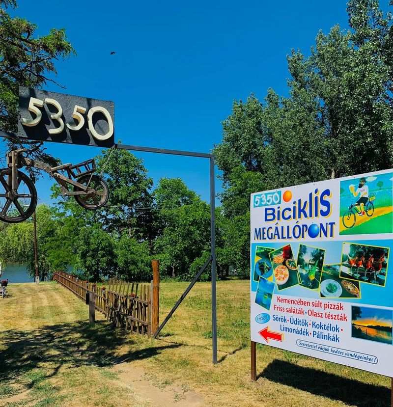
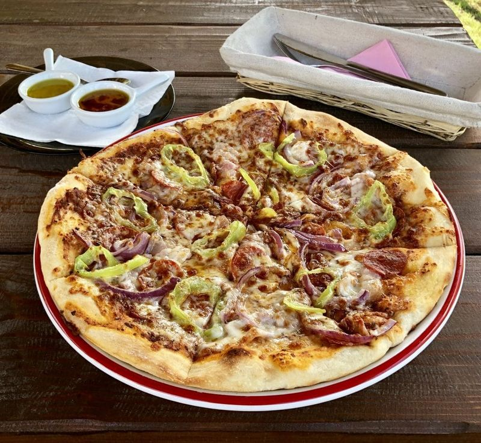
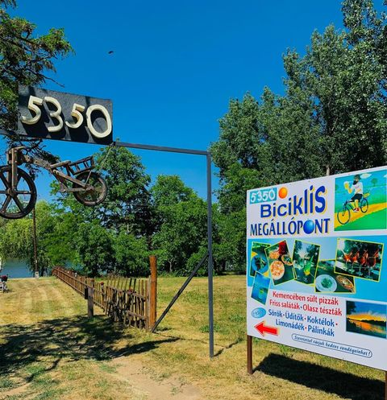
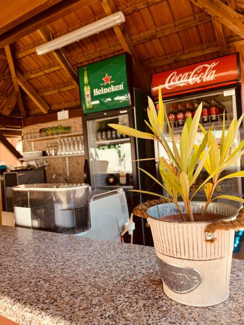

Kézzel nyújtott tészta
Vékony tészta, olasz recept alapján, frissen sütve.
Vékony tészta, olasz recept alapján, frissen sütve.
Saját készítésű paradicsomszósz, friss feltétekkel.
Margheritától a Quattro Formaggiig — 15 féle pizza, mind 32 cm.

Pihenő- és falatozóhely a Tisza-parti kerékpártúrán — közvetlenül a víz mellett.
Pizzák, tészták és saláták helyben fogyasztásra és elvitelre — házhozszállítás nincs.
Mozzarella, krémes sajtmártás, sonka, bacon, főtt tojás, kaliforniai paprika
Mozzarella, paradicsom
Mozzarella, sonka
Mozzarella, ropogós szalámi
Mozzarella, gazdag házi bolognai ragu
Mozzarella, tonhal darabok, lilahagyma
Mozzarella, sonka, szeletelt gomba
Mozzarella, feketeerdő sonka, friss rukkola, parmezán forgács
Mozzarella, sonka, szalámi, gomba, articsóka
Mozzarella, márványsajt, feta, reszelt parmezán
Mozzarella, sonka, édes ananászkarikák

Mozzarella, bacon, lilahagyma, kolbász, erőspaprika
Mozzarella, tenger gyümölcsei válogatás
Mozzarella, feketeerdő sonka, gomba, articsóka, olívabogyó
Mozzarella, spenót, illatos fokhagyma, tükörtojás
Különleges tintahaltintás fekete tésztával
Jégsaláta, kígyóuborka, paradicsom, csirkemell, pizzatészta csíkok, cézár öntet
Elviteles doboz: 200 Ft / étel.


Pihenő- és falatozóhely a Tisza-parti kerékpártúrán. Nézd meg a nyitvatartást, mielőtt elindulsz.
| Hétfő | Zárva |
| Kedd | Zárva |
| Szerda | Zárva |
| Csütörtök | 14:00–20:00 |
| Péntek | 14:00–20:00 |
| Szombat | 11:00–20:00 |
| Vasárnap | 11:00–20:00 |